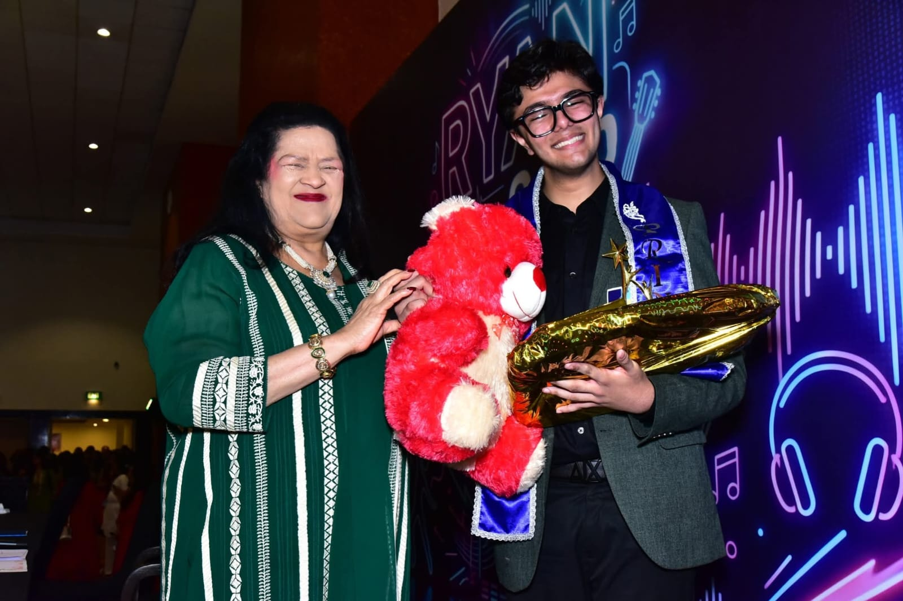

Law · Politics · Words
An aspiring student of the Law, with a penchant for political theory, writing, and a conglomerate of both.
Currently Preparing For
Common Law Admission Test · 7 December 2026 · IST
About
I'm a high schooler at Ryan International School, Greater Noida — currently navigating the intersection of law, political thought, and the written word. My academic interests are inseparable from my convictions: that institutions matter, that language shapes power, and that both are worth studying seriously.
My affinity for humanistic studies is grounded in action. I've engaged with social-welfare initiatives including interactions with Mr. Ramveer Tanwar (the Pond Man of India), and associations with organisations such as the Goonj Foundation and Say Earth.
My journalistic work — through school-sponsored platforms RyanTV and BBN — has given me the opportunity to interview public figures including Mr. Om Birla and Mrs. Kiran Bedi. Across every role, I seek to learn and to contribute something meaningful.
The Constitution is not a mere lawyers' document; it is a vehicle of life, and its spirit is always the spirit of the age.— Dr. B.R. Ambedkar
Graphic Designer
Designing visual communication for the foundation's initiatives and outreach campaigns.
Editor-in-Chief
Led editorial direction and content strategy for the publication's run.
Articles published under the organisation:
Head of Marketing
Oversaw marketing strategy and outreach for the duration of the project.
Secretary of Logistics & Operations
Managed end-to-end logistics and operational coordination for the project's lifecycle.
Co-Founder & Chief Operating Officer
Co-founded a Model UN platform connecting student organisers with sponsors, designers, and delegate networks — addressing a longstanding gap in the MUN ecosystem.
CommitTea.org was built as a middleman for MUN founders: armed with contacts, skills, and on-demand accessibility in the MUN OT market. The platform provided a full suite of services — marketing, cold-calling, and freelance design — to conference organisers who lacked the infrastructure to source these independently.
In its operational tenure, CommitTea.org collaborated with over 20 Model UN platforms, built a following of a thousand on Instagram, and established itself as a recognised collaborator across the MUN circuit. The venture was ultimately transferred to a new team in November 2025.
Ryan International School, Greater Noida
A range of leadership roles across editorial, parliamentary, environmental, journalistic, and MUN governance spheres.
Class X · CBSE
93.4%
Ryan International School, Greater Noida
Class XI · Commerce
80%
2nd Overall in Commerce stream
CLAT 2026 · Mock Attempt
AIR 3,201
Mock attempt — Main attempt is CLAT 2027
Cambridge English
C1
C1 Advanced Proficiency Certificate
Ryan Prince · Grade XII
Best Student
Highest award across all Ryan International Group of Institutions
TED Talk · Ryan Teen Camp
1st Prize
Ryan Teen Camp, Daman

Highest Honour · Ryan International Group
Awarded in Grade XII, the Ryan Prince is the highest distinction conferred across all institutions under the Ryan International Group — recognising the student who best embodies academic excellence, leadership, and character.